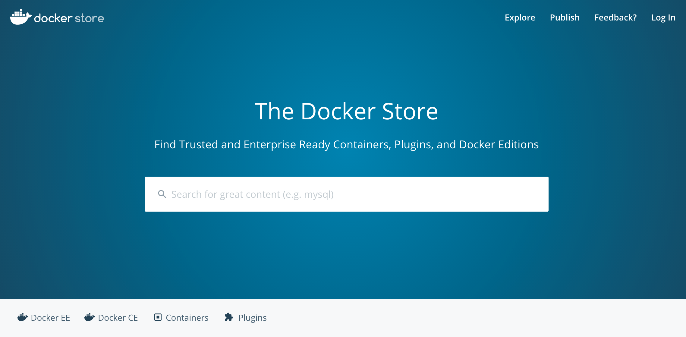
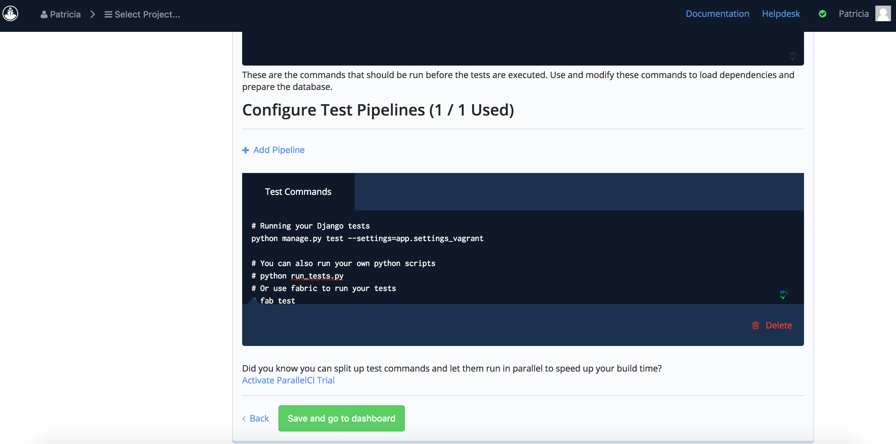
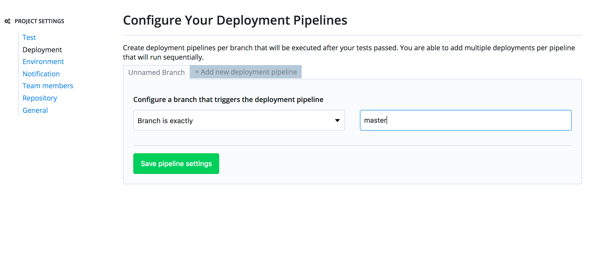

Despliega código en la nube de forma Ágil
Buenas prácticas y Herramientas

Startup californiana, con sede en San Francisco y centro de desarrollo en Granada.
Patrocinadores de la Oficina de Software Libre.
DevOps
Metodología de creación de software
DevOps
DevOps
- Automatización de tareas
- Preparación de entornos de desarrollo, pruebas y producción
- Provee herramientas para realizar despliegues a los entornos
- Gestiona las distintas configuraciones de los servidores
DevOps
Ventajas
- Se fabrica software más rápidamente
- Software es de mayor calidad
- Menor coste
- Frecuencia de despliegues muy alta
- Menos preocupaciones
DevOps

Por donde empezar...
con qué herramientas...
Entornos de Desarrollo
Sistemas de Virtualización
Sistemas de Virtualización
Ventajas
- Misma configuración para todos los desarrolladores
- Independiente del Sistema Operativo
- Semejante a los entornos de Test y Producción
- Facilita trabajar con distintos proyectos

Gestor de máquinas virtuales
Vagrant Box
Ejecución con Vagrant
Linux + Contenedores
Docker Store
Ejecución con Docker
Desarrollo Dirigido
por Tests
TDD
TDD

Sistema de Control de Versiones
Sistemas de Control de Versiones
Plataformas de Desarrollo Colaborativo
Integración Continua
Ventajas CI
- Detección y solución de problemas de integración.
- Disponibilidad constante de una versión para pruebas, demos o lanzamientos.
- Ejecución inmediata de las pruebas unitarias.
- Monitorización continua de las métricas de calidad del proyecto.
Sistemas de Integración Continua
Nuevo proyecto Codeship
1. Seleccionamos la Plataforma del VCS
2. Conectamos Codeship con la Plataforma
3. Seleccionamos Codeship Basic
4. Configuramos el Setup del Proyecto
4. Configuramos los Tests del Proyecto
5. Sistema CI listo!
Revisiones de Código
Revisiones de Código
Despliegue continuo
Ventajas Despliegue Continuo
- Incrementos de productos más fluidos
- Feedback de usuarios más temprano
- Proceso automatizado evitando error humano
- Cualquier miembro del equipo puede hacer el despliegue
Despliegue Continuo con Codeship
1. Creamos nueva aplicación en Heroku
2. Configuramos el Deployment en Codeship
3. Configuramos
3. Configuramos
Una vez desplegada...
- Soporte a usuarios
- Comunicación